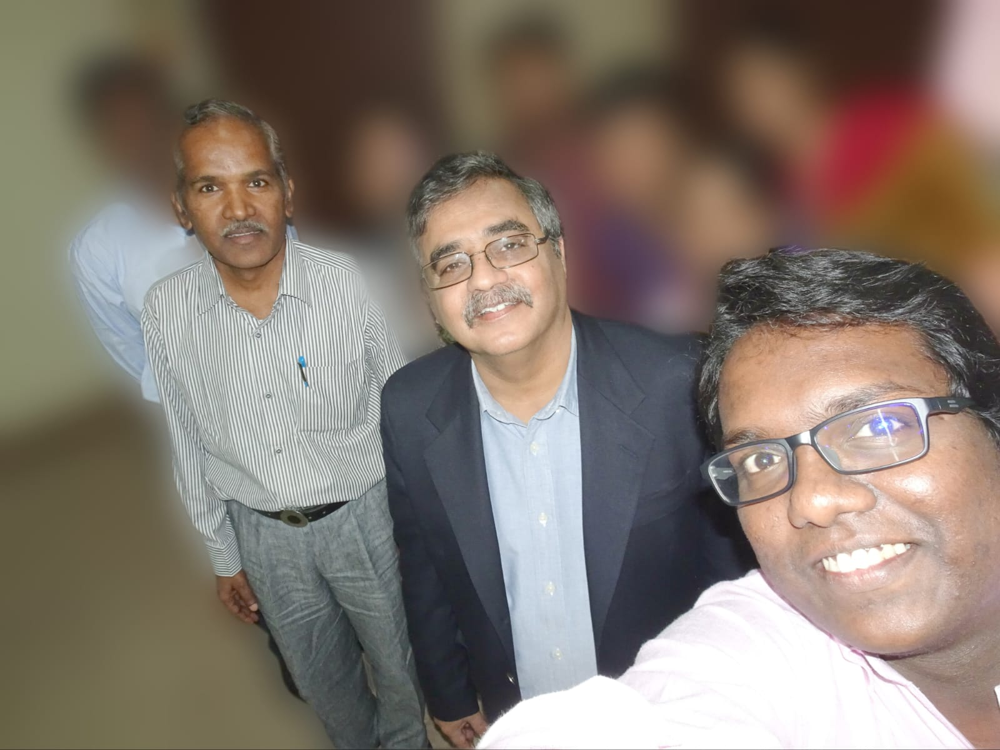

Computer Science & Engineering
NIT Calicut
Kerala, India
Computer Science with Specialization in Digital Image Computing
Department of Computer Science, Kariyavattom Campus
University of Kerala
Trivandrum, Kerala, India.
Computer Science
School of Computer and Information Sciences
University of Hyderabad
Hyderabad, Telangana, India
&
Center of Excellence in Cyber Security
Institute for Development and Research in Banking Technology (IDRBT)
Estd. by Reserve Bank of India
Hyderabad, Telangana, India.
I feel incredibly fortunate to have had the opportunity to meet Prof. Nasir Memon, a true pioneer in the field of Digital Forensics. To me, he is not only a respected professor but also my Manasa Guru. I have had the privilege of mentioning him in various training sessions and lectures on Digital Forensics. The story of how he, along with two of his students, founded Digital Assembly and developed Adroit Photo Recovery always captivated the audience. Their patented technology, based on graph theory, allowed users to restore deleted images, making it a remarkable achievement. Whenever the topic of File Carving arose, I found myself referring to his research articles and the elegant mathematical concepts that he explained. In 2014, we procured the software for our lab and demonstrated its effectiveness in several Executive Education and Development Programmes at IDRBT. The attached photo was taken on 27th Dec 2016, during Prof. Nasir Memon's visit to IDRBT. On this occasion, he delivered an enlightening talk on "Emerging NUI-based Methods for User Authentication." His insights and contributions to the field of Digital Forensics continue to inspire and influence many, including myself.
My thesis advisor and the Guru, Prof.B.M. Mehtre stands next to Prof. Memon. His seminal work on fingerprint identification led to the development of the first automated fingerprint identification system in India[1], which was later deployed in many state police departments in India and some countries outside India.
In the photograph, the lab members are intentionally blurred as a gesture of respect for their privacy.

Source:
[1]. https://www.idrbt.ac.in/dr-b-m-mehtre/